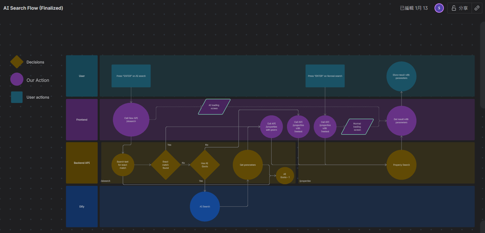
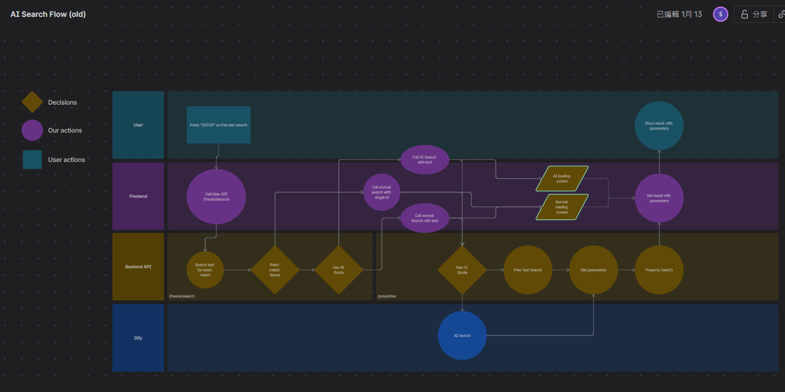

AI Search Frontend to Backend API Flow
System Architecture
Architecture Evolution: The old version was based on the original API to add up AI search function, while the finalized version created a new API.
- Listing all conditions and fallback scenario cases
- Design new API & base on existing API restructure
- Provided full clear picture for whole team to develop new feature
Finalized Version
(New API Design)

Original Version
(Based on Original API)
